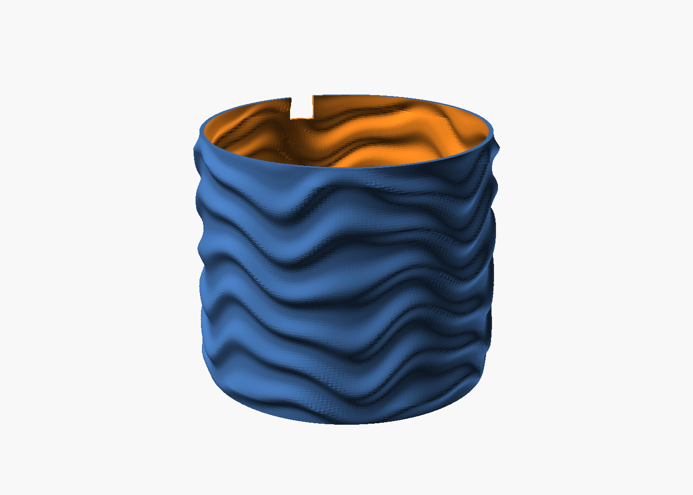

Junction 2026 · Beyond the Clinic challenge (Aalto University)
Plant the beginning
Smart plant
A bedside planter-lamp for the months after TMS treatment for depression. Every day it notices three small things: how the person feels (one button check-in), whether they water their plant, and whether daylight actually reaches the room. When those change for several days, the clinic gets one calm line: who to check in with this week.
The problem
TMS (transcranial magnetic stimulation) is a treatment for severe depression. For a few weeks the person comes to the clinic almost every day for a short session of gentle magnetic pulses to the brain. For many people it works. The hard part comes after the treatment ends.
"Plant the beginning" notices these everyday signs, asks almost nothing of the person on a bad day, and lets the clinic step in sooner.
How it works
The lamp watches three everyday signals. None of them needs the person to open an app, and together they say more than any one of them alone.
A probe in the soil notices each watering. Caring for something living is a small sign of care for oneself, of the energy to do it, and of being active and up. A plant left dry for days says something too.
One question each morning on three buttons: green opens it, + and − choose from 1 to 5, green saves. It takes ten seconds, and a missed day is information as well. It also marks when the day really started.
A light sensor measures how much daylight gets in and when the room gets bright. Did the person open the curtains and switch the lights on, or answer the mood question and go back to bed in the dark?
Each signal is compared with the person's own usual pattern (weekdays and weekends apart). When mornings drift, earlier or later, for several days, the clinic's list shows "keep an eye" or "check in" with one reason. The lamp flags worrying behaviour, but the clinic decides on the course of action.
Supporting features
- A light that answers. While choosing, the lamp glows in the mood's colour, like a rising sun: a dim ember for a hard morning up to bright, sunny light for a good one. No mood gets a "sad" colour, and nothing blue glows at night. Afterwards it keeps glowing softly; + and − dim it, down to off, and at 22:00 it dims by itself.
- Chimes and a gentle wake cue. A soft sunrise on the lamp in the morning and a short chime. The lamp tries three styles and learns which one is followed by steadier mornings for this person.
- Away mode. Hold green for 3 seconds, so travel days aren't counted as late mornings.
Extras
Room temperature and humidity: nice smart-home readings, shown only to the person in their own view, never to the clinic, and not used to flag anyone.
No camera, no microphone, no bed-exit sensing. Only small events leave the lamp.
See it working
Two views read the same lamp. My lamp is the person's own: today's check-in, their plant, their room, a gentle week in colours, what seems to help, exactly what the clinic sees, and where to get help right now. No scores, no "late", no streaks.
The clinic view ranks people by need, shows each morning against the person's own usual time, what the lamp is learning, and a weekly note written with Gemini. It runs on three simulated people whose days went through the lamp's real software, and on the real lamp at Junction: its check-ins, room and plant readings arrive within seconds (choose "Live lamp").
The lamp, as built
The 3D-printed planter from the real print files, and the electronics as wired at Junction: the Arduino UNO Q, a mini breadboard with the three check-in buttons and three TIP120 light switches, the temperature and humidity sensor, the light sensor, the chime, the soil probe and the 12 V LED strip that lines the sleeve's inner rim. Drag to turn it, zoom with + and −, and point at a part to see what it does.

The parts, bottom to top
- Floor plate: holds the Arduino UNO Q (2 GB) upright and screws into the base, so everything is wired on the table first.
- Base: the electronics, with a translucent window where the board's LED matrix shows the mood picker, three buttons for the daily check-in, a chime, a light sensor, and a vented pocket outside so the temperature and humidity sensor reads the room.
- Sleeve: a thin wall of waves round the plant's own nursery pot, catching its drainage water; a soil probe rides in the pot, and a 12 V LED strip on the inner rim gives the lamp its warm light.
Tested on real data
The lamp's morning rule was tested on real wristband data before building further: the public Depresjon dataset (Simula, Norway), minute-by-minute activity from 23 people with depression and 32 without, about two weeks each. The research behind every design choice was reviewed too.
Average time people got up
First 30 minutes of sustained activity after 04:00, averaged per person, then per group.
People with depression got up about 1 hour 40 minutes later. Getting-up time tells the two groups apart fairly well (AUC 0.79), so mornings are a sensible thing for the lamp to watch.
How much later people got up at weekends
Weekend average minus weekday average, in minutes.
But single mornings are very noisy: everyone's getting-up time moves by about two hours from day to day, and healthy people sleep in by almost two hours at weekends. A rule that says "late = more than an hour after usual" would trip on an ordinary weekend.
How often would the lamp raise a false alarm, and how often would it catch a slip?
The dataset has no recorded relapses, so a slip had to be simulated. The real mornings of the 32 people without depression were run through each version of the rule twice: first exactly as recorded, to count false alarms, then with a slow slip added to those same mornings (getting up 25 minutes later every day from day 8, a stand-in for the slow change that can come before a relapse). So the 32 slips are the same 32 people with a simulated drift, not 32 more people.
| Rule | Healthy people flagged by mistake (about a week) | Simulated slip caught (same 32 people) | Days to notice |
|---|---|---|---|
| First version: 5 late mornings in a row | 1 of 32 (3 %) | 18 of 32 | 6.5 |
| Refined: separate weekday and weekend baselines, 3-day smoothing, 4 of the last 5 days | 6 of 32 (19 %) | 25 of 32 | 6 |
| The lamp's code now, two levels: "check in" after 5 mornings in a row far from usual (earlier or later); "keep an eye" when mornings drift on 5 of the last 6 days or get much more irregular. Weekday and weekend baselines, missing days skipped. | "Check in": 3 of 32 (9 %) "Keep an eye": 6 of 32 (19 %) | "Check in": 22 of 32 Either level: 24 of 32 | 6 5 |
The last row runs the lamp's actual software on the same real mornings. Limits: two weeks per person, no relapse labels, and the slip is simulated. This checks noise and false alarms, not real relapse detection.
What the research adds
- The need is real. Across studies, 53 % of people helped by TMS were still doing well at 6 months and 46 % at 12 months (Senova 2019 meta-analysis). The 2026 Dutch-Flemish consensus supports watching closely and re-treating when symptoms return.
- Irregularity matters more than lateness. In a one-year study of 93 people in remission, a flatter, less regular day-night rhythm went with about twice the relapse risk (Tonon et al., JAMA Psychiatry 2026). Later wake times on their own were not the finding.
- Prediction is modest. Sensing studies reach around 0.7 accuracy at best, so a flag is a reason to ask, never a diagnosis.
- A short validated question helps. A daily or weekly PHQ-2 (two questions) tracks the full PHQ-9 well (r = 0.80), and it is what clinicians already trust.
- Light and plants are support, not therapy. Dawn simulation helped in winter depression at 200-300 lux; the lamp's small window is far dimmer, so it's a gentle wake cue. Caring for a plant is a daily ritual and a signal, not a treatment.
How the evidence shaped the product
Most of these are in the lamp's software now; the clinic view shows them working.
A quiet "keep an eye" from the more sensitive rule, and an amber "check in" only from the strict one (later also from a worrying PHQ-2). The clinic sees the expected false-alarm rate next to each flag.
Separate weekday and weekend patterns, a rolling baseline that follows the seasons, and early waking counts as much as sleeping in.
Holding the green button means "I'm away", and a lamp that's unplugged isn't counted as a late morning. In the real data, missing days would otherwise have caused most of the false alarms.
Gives the clinic a validated number to act on, which is how re-treatment decisions are made.
The lamp varies its gentle responses (wake cue, chime, plant reminder) and keeps an honest "still learning" estimate of which ones are followed by steadier mornings and better mood for this person.
"Flags patterns linked to relapse risk", never "predicts relapse"; "gentle wake cue", never therapy. My lamp says plainly that nobody watches in real time and gives 112 and MIELI's 24/7 crisis line. Next: the same on the lamp itself.
Why waves
The sleeve's swells are brain waves as much as sea waves: the rhythms an EEG draws, the signal the partner lab measures when it stimulates the brain with TMS. And aalto is Finnish for "wave", the name of the university behind the challenge. A lamp for life after brain stimulation, wrapped in waves.

Sources
- Garcia-Ceja et al., Depresjon dataset, Simula: datasets.simula.no/depresjon
- Senova et al. 2019, durability of rTMS response, Brain Stimulation: PubMed 30344109
- Consensus statement on maintenance rTMS (2026): Utrecht University research portal
- Tonon et al. 2026, sleep and rest-activity rhythms as markers of relapse, JAMA Psychiatry: JAMA Network
- RADAR-MDD, sleep and relapse, J Affect Disord 2024: PubMed 39038618
- Daily PHQ-2 against PHQ-9: PMC6030575
- Golden et al. 2005, light treatment and dawn simulation, Am J Psychiatry: AJP